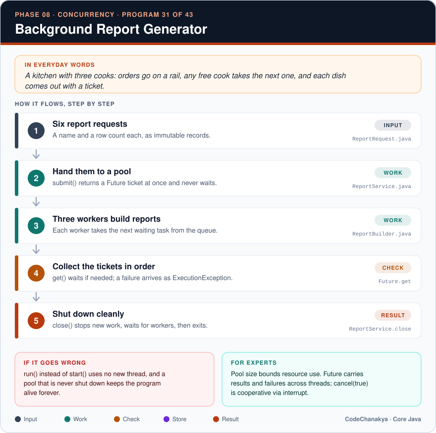

Phase 08 · Concurrency · Program 31 of 43
Background Report Generator
The problem
A company needs six reports every morning, and each one waits on a slow database. Built one after another, the sixth waits for the first five and the person who asked stares at a frozen screen.
A pool of worker threads builds several reports at the same time. submit() returns a Future ticket straight away, and the caller collects each report in order when it is ready.
See the flow
The whole program as one picture. Read it top to bottom; the colour of each card says what kind of step it is.


If you are new to coding
A kitchen with three cooks: orders go on a rail, any free cook takes the next one, and each dish comes out with a ticket.
If you are learning
Follow the numbered cards from top to bottom. Open the file named on each card, run the program, and match its output to the last card.
If you are experienced
Pool size bounds resource use. Future carries results and failures across threads; cancel(true) is cooperative via interrupt.
Text version of the flow
- Six report requests (input): A name and a row count each, as immutable records.
- Hand them to a pool (work): submit() returns a Future ticket at once and never waits.
- Three workers build reports (work): Each worker takes the next waiting task from the queue.
- Collect the tickets in order (check): get() waits if needed; a failure arrives as ExecutionException.
- Shut down cleanly (result): close() stops new work, waits for workers, then exits.
Read in this order
- 1ReportRequest.java, Report.javaTwo immutable records, safe to hand between threads.
- 2ReportBuilder.javaThe slow work, with no shared state.
- 3ReportService.javaThe pool, the tickets and a safe close().
- 4Main.javaSix sections: a thread by hand, a pool, a failure, a cancel, a shutdown.
The code
package com.codechanakya.reports; import java.util.ArrayList; import java.util.List; import java.util.Set; import java.util.concurrent.ConcurrentHashMap; import java.util.concurrent.ExecutorService; import java.util.concurrent.Executors; import java.util.concurrent.Future; import java.util.concurrent.TimeUnit; /** * Builds reports on a small team of worker threads. * * <p>Creating a thread for every request is wasteful and, with enough requests, dangerous. An * {@link ExecutorService} keeps a fixed number of workers alive and hands each new task to * whichever worker is free. Tasks that arrive while every worker is busy wait in a queue. * * <p>The service is {@link AutoCloseable}, so {@code try-with-resources} always shuts the * workers down. Forgetting to do that is the most common executor mistake: the worker threads * are not daemons, so the program never ends. */ public final class ReportService implements AutoCloseable { private final ExecutorService pool; /** Names of the worker threads that have run at least one task. A concurrent set, because many threads add to it. */ private final Set<String> workersUsed = ConcurrentHashMap.newKeySet(); public ReportService(int workers) { this.pool = Executors.newFixedThreadPool(workers, new NamedThreads("report-worker")); } /** * Hands every request to the pool and returns straight away. * * <p>Each {@link Future} is a ticket for a result that may not exist yet. The caller keeps the * tickets and collects the reports later, in whatever order it likes. */ public List<Future<Report>> submitAll(List<ReportRequest> requests) { List<Future<Report>> tickets = new ArrayList<>(); for (ReportRequest request : requests) { tickets.add(pool.submit(() -> { // a Callable: it returns a Report workersUsed.add(Thread.currentThread().getName()); return ReportBuilder.build(request); })); } return tickets; } /** Submits one task that returns nothing, for the cancellation demonstration. */ public Future<?> submit(Runnable task) { return pool.submit(task); } /** Which worker threads have done some work. */ public Set<String> workersUsed() { return Set.copyOf(workersUsed); } /** True once {@link #close()} has started. */ public boolean isShutdown() { return pool.isShutdown(); } /** * Stops accepting new tasks, lets the running ones finish, and waits for the workers to exit. * If they take too long, they are interrupted. */ @Override public void close() { pool.shutdown(); // no new tasks; finish what is queued try { if (!pool.awaitTermination(5, TimeUnit.SECONDS)) { pool.shutdownNow(); // out of patience: interrupt them } } catch (InterruptedException e) { pool.shutdownNow(); Thread.currentThread().interrupt(); // keep the "I was interrupted" signal alive } } }
Only the key files are shown. The rest are in the repository.
Run it
$ ./run.sh --check
--- A thread by hand ---
Main is running on thread main
Before start(), the worker is NEW
Hello from thread report-worker
After join(), the worker is TERMINATED
--- One thread doing everything ---
Sales: 1200 rows, checksum 199892
Inventory: 800 rows, checksum 457531
Payroll: 450 rows, checksum 351826
Attendance: 2000 rows, checksum 769152
Tax: 300 rows, checksum 677226
Audit: 1500 rows, checksum 138478
Each report waited for the one before it.
--- A pool of three workers ---
Handed over 6 requests without waiting.
Sales: 1200 rows, checksum 199892
Inventory: 800 rows, checksum 457531
Payroll: 450 rows, checksum 351826
Attendance: 2000 rows, checksum 769152
Tax: 300 rows, checksum 677226
Audit: 1500 rows, checksum 138478
Worker threads used: 3 (never more than 3: true)
--- When one report fails ---
Sales: 1200 rows, checksum 199892
Broken failed: Report Broken needs at least one row
Tax: 300 rows, checksum 677226
The other two reports were not affected.
--- Stopping a task that runs too long ---
cancel(true) returned true, isCancelled() is true
The task noticed the interrupt: true
--- Shutting down properly ---
Before close(), isShutdown is false
After close(), isShutdown is true
A new request is refused: RejectedExecutionException
OK: output matches expected-output.txt
This is the real output from OpenJDK 21.0.13 on Linux. It has not yet been run on Java 25, Windows or macOS.
Try it yourself
- BeginnerAdd a seventh report.
- BeginnerAdd submit() for one request.
- BeginnerPrint whether threads are daemons.
- IntermediateAdd buildAll() with invokeAll.
- IntermediateCollect summaries and failures in a map.
- ChallengeRun a job with a deadline.
Hints and solutions are in the exercises and solutions folders. Try first.
Break it on purpose
Three files: run() instead of start(), a pool that is never shut down, and a checked exception inside a Runnable. The README in the broken folder explains each one.